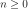

WhiteNoise¶
(Source code, png, hires.png, pdf)
{kind=link}
{kind=link}
-
class
WhiteNoise(*args)¶ White Noise process.
Parameters: - distribution :
Distribution Distribution of dimension
 of the white noise process.
of the white noise process.- mesh :
Mesh, optional Mesh in
 over which the process is discretized.
By default, the mesh is reduced to one point in
over which the process is discretized.
By default, the mesh is reduced to one point in  which coordinate is equal to 0.
which coordinate is equal to 0.
Notes
A second order white noise is a stochastic process of dimension
such that the covariance function where is the covariance matrix of the process at vertex  and
and  the Kroenecker function.
the Kroenecker function.A process
 is a white noise if all finite family of locations , is independent and identically distributed.
is a white noise if all finite family of locations , is independent and identically distributed.Examples
Create a normal normal white noise of dimension 1:
>>> import openturns as ot >>> myDist = ot.Normal() >>> myMesh = ot.IntervalMesher([10]*2).build(ot.Interval([0.0]*2, [1.0]*2)) >>> myWN = ot.WhiteNoise(myDist, myMesh)
Get a realization:
>>> myReal =myWN.getRealization()
Attributes: thisownThe membership flag
Methods
getClassName()Accessor to the object’s name. getContinuousRealization()Get a continuous realization. getCovarianceModel()Accessor to the covariance model. getDescription()Get the description of the process. getDistribution()Accessor to the distribution. getFuture(*args)Prediction of the  future iterations of the process.
future iterations of the process.getId()Accessor to the object’s id. getInputDimension()Get the dimension of the domain  .
.getMarginal(indices)Accessor to the marginal process. getMesh()Get the mesh. getName()Accessor to the object’s name. getOutputDimension()Get the dimension of the domain .getRealization()Get a realization of the process. getSample(size)Get  realizations of the process.
realizations of the process.getShadowedId()Accessor to the object’s shadowed id. getTimeGrid()Get the time grid of observation of the process. getTrend()Accessor to the trend. getVisibility()Accessor to the object’s visibility state. hasName()Test if the object is named. hasVisibleName()Test if the object has a distinguishable name. isComposite()Test whether the process is composite or not. isNormal()Test whether the process is normal or not. isStationary()Test whether the process is stationary or not. setDescription(description)Set the description of the process. setDistribution(distribution)Accessor to the distribution. setMesh(mesh)Set the mesh. setName(name)Accessor to the object’s name. setShadowedId(id)Accessor to the object’s shadowed id. setTimeGrid(timeGrid)Set the time grid of observation of the process. setVisibility(visible)Accessor to the object’s visibility state. -
__init__(*args)¶ Initialize self. See help(type(self)) for accurate signature.
-
getClassName()¶ Accessor to the object’s name.
Returns: - class_name : str
The object class name (object.__class__.__name__).
-
getContinuousRealization()¶ Get a continuous realization.
Returns: - realization :
Function According to the process, the continuous realizations are built:
- either using a dedicated functional model if it exists: e.g. a functional basis process.
- or using an interpolation from a discrete realization of the process on
 : in dimension
: in dimension  , a linear interpolation and in
dimension , a piecewise constant function (the value at a
given position is equal to the value at the nearest vertex of the mesh of
the process).
, a linear interpolation and in
dimension , a piecewise constant function (the value at a
given position is equal to the value at the nearest vertex of the mesh of
the process).
- realization :
-
getCovarianceModel()¶ Accessor to the covariance model.
Returns: - cov_model :
CovarianceModel Covariance model, if any.
- cov_model :
-
getDescription()¶ Get the description of the process.
Returns: - description :
Description Description of the process.
- description :
-
getDistribution()¶ Accessor to the distribution.
Returns: - distribution :
Distribution The distribution of dimension
of the white noise.
- distribution :
-
getFuture(*args)¶ Prediction of the
future iterations of the process.Parameters: - stepNumber : int,

Number of future steps.
- size : int,
 , optional
, optional Number of futures needed. Default is 1.
Returns: - prediction :
ProcessSampleorTimeSeries - future iterations of the process.
If
 , prediction is a
, prediction is a TimeSeries. Otherwise, it is aProcessSample.
- stepNumber : int,
-
getId()¶ Accessor to the object’s id.
Returns: - id : int
Internal unique identifier.
-
getInputDimension()¶ Get the dimension of the domain
.Returns: - n : int
Dimension of the domain
: .
-
getMarginal(indices)¶ Accessor to the marginal process.
Parameters: - N : integer
The index of the marginal to be extracted.
- indices :
Indices, optional The list of the indexes of the marginal to be extracted.
Returns: - wn :
WhiteNoise The marginal white noise.
-
getName()¶ Accessor to the object’s name.
Returns: - name : str
The name of the object.
-
getOutputDimension()¶ Get the dimension of the domain
.Returns: - d : int
Dimension of the domain
.
-
getRealization()¶ Get a realization of the process.
Returns: - realization :
Field Contains a mesh over which the process is discretized and the values of the process at the vertices of the mesh.
- realization :
-
getSample(size)¶ Get
realizations of the process.Parameters: - n : int, 
Number of realizations of the process needed.
Returns: - processSample :
ProcessSample - realizations of the random process. A process sample is a
collection of fields which share the same mesh
 .
.
-
getShadowedId()¶ Accessor to the object’s shadowed id.
Returns: - id : int
Internal unique identifier.
-
getTimeGrid()¶ Get the time grid of observation of the process.
Returns: - timeGrid :
RegularGrid Time grid of a process when the mesh associated to the process can be interpreted as a
RegularGrid. We check if the vertices of the mesh are scalar and are regularly spaced in but we don’t check if the connectivity of the mesh is conform
to the one of a regular grid (without any hole and composed of ordered
instants).
- timeGrid :
-
getTrend()¶ Accessor to the trend.
Returns: - trend :
TrendTransform Trend, if any.
- trend :
-
getVisibility()¶ Accessor to the object’s visibility state.
Returns: - visible : bool
Visibility flag.
-
hasName()¶ Test if the object is named.
Returns: - hasName : bool
True if the name is not empty.
-
hasVisibleName()¶ Test if the object has a distinguishable name.
Returns: - hasVisibleName : bool
True if the name is not empty and not the default one.
-
isComposite()¶ Test whether the process is composite or not.
Returns: - isComposite : bool
True if the process is composite (built upon a function and a process).
-
isNormal()¶ Test whether the process is normal or not.
Returns: - isNormal : bool
True if the process is normal.
Notes
A stochastic process is normal if all its finite dimensional joint distributions are normal, which means that for all
 and
and
 , with
, with  , there is
, there is
 and
and
 such that:
such that:
where
 ,
and
and
,
and
and
 is the symmetric matrix:
is the symmetric matrix:
A Gaussian process is entirely defined by its mean function
 and its
covariance function
and its
covariance function  (or correlation function
(or correlation function  ).
).
-
isStationary()¶ Test whether the process is stationary or not.
Returns: - isStationary : bool
True if the process is stationary.
Notes
A process
 is stationary if its distribution is invariant by
translation:
is stationary if its distribution is invariant by
translation:  ,
,
 ,
,
 , we have:
, we have:
-
setDescription(description)¶ Set the description of the process.
Parameters: - description : sequence of str
Description of the process.
-
setDistribution(distribution)¶ Accessor to the distribution.
Parameters: - distribution :
Distribution The distribution of dimension
of the white noise.
- distribution :
-
setName(name)¶ Accessor to the object’s name.
Parameters: - name : str
The name of the object.
-
setShadowedId(id)¶ Accessor to the object’s shadowed id.
Parameters: - id : int
Internal unique identifier.
-
setTimeGrid(timeGrid)¶ Set the time grid of observation of the process.
Returns: - timeGrid :
RegularGrid Time grid of observation of the process when the mesh associated to the process can be interpreted as a
RegularGrid. We check if the vertices of the mesh are scalar and are regularly spaced in but we don’t check if the connectivity of the mesh is conform
to the one of a regular grid (without any hole and composed of ordered
instants).
- timeGrid :
-
setVisibility(visible)¶ Accessor to the object’s visibility state.
Parameters: - visible : bool
Visibility flag.
-
thisown¶ The membership flag
- distribution :